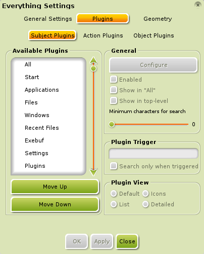

[kliknite na bilo koju sliku za uvećanje]
Kada su inženjeri/razvijatelji Enlightenment (E17) napravili ovaj Modul, pokušali su da nađu ime koje bi opisalo šta on radi. Sve što su mogli da smisle bilo je Sve(Everything).
Ukratko, Sve(Everything) je potpuno indeksirana baza podataka za sve programe i fajlove na vašem PC-ju.

Drugi operativni sistemi imaju sličnu karakteristiku/funkciju. Windows ima "Pretraži Radnu Površinu (Desktop Search)". Mac OS X ima "Reflektor (Spotlight)". Ako pratite Linux verovatno ste upoznati sa "Gnome-Uradi (Gnome-Do)". Ono što izdvaja Sve(Everything) je njegova plugin arhitektura koja mu omogućava da ide iznad samog nalaženja programa i fajlova.
- Kako Pokrenuti Sve (Everything)
- Sve (Everything) Radi Svašta (Anything)
- Plugin-ovi
- Iznad Sve (Everything)
- Upravljanje Tastaturom
Kako Pokrenuti Sve (Everything)
Sve(Everything) je vrlo sofisticiran. Ne zbog svega onoga što može da uradi, već kako lako to može da uradi. Standardni (default) E17 metod za otvaranje Sve(Everything) je da pritisnete Alt+Esc. Zatim samo počnite da kucate šta želite da uradite. Dok kucate, Sve(Everything) će početi da pokazuje sugestije onoga što on misli da pokušavate da uradite. Kada vidite šta želite, možete to selektovati i pritisnuti Enter ili ga pokrenuti duplim klikom. Ako se predomislite i želite da izađete iz Sve(Everything), jednostavno pritisnite Esc ili kliknite negde van Sve(Everything) prozora.
Po standardu(default), Bodhi Linux obezbeđuje Win+Space i Alt+Esc kao prečice do Sve(Everything), ali mu takođe možete pristupiti preko Main Menu>Run Everything.
Sve(Everything) se takođe prilagođava vašim kompjuterskim navikama. Svaki put kada koristite Sve(Everything) on pamti ono što najčešće radite. Vremenom će se vaši najčešće korišćeni fajlovi, programi, itd, pojavljivati sa manjim pritiskanjem tastera. Na primer, kada prvi put koristite Sve(Everything) i samo ukucate slovo
M , videćete nekoliko programa u nekom redosledu kao što su
Podešavanja Menija (Menu Settings), Midori,
Mikser (Mixer), i tako dalje. Sada pretpostavimo da ste nastavili sa kucanjem i da ste otkucali Midori , i pokrenuli ga. Nakon što ovo ponovite nekoliko puta, samo ćete morati da otkucate M i
Midori će se pojaviti prvi na listi.
Sve (Everything) Radi Svašta (Anything)
Pretpostavimo da imate prilagođen bash skript po imenu myscript,
i želite da ga izmenite. Pokrenete Sve(Everything) i otkucate myscript . Sada, kada ga selektujete, kako će
Sve(Everything) da zna da li želite da ga pokrenete ili ga izmenite?
Ako pogledate na vrh Sve(Everything) prozora, videćete dve trake(tabs). Prva je standardni(default) pogled koji izlistava moguća poklapanja sa vašim odabirom. Drugi je zavistan od teksta i podložan je promeni u zavisnosti od toga šta je selektovano. Tipično prikazuje različite Akcije (Actions) koje možete izvršiti sa izabranom stavkom(item).
Da se vratimo na naš myscript primer, ako kliknete da na drugu traku(tab), videćete listu mogućnosti šta sve možete da uradite sa vašim skriptom kao što su Otvori sa... (Open with...) ili Iskopiraj u... (Copy to...)
Takođe je moguće da će da izlista i tekst editor kao što je Leafpad i opciju
Pokreni iz Terminala (Run in Terminal). Izaberite Leafpad i vaš skript će se otvoriti za izmene/editovanje.
Šlag na torti je da Sve(Everything)
ne samo da prati šta najčešće selektujete, on prati i šta najčešće radite sa njima. Tako da sledeći put, kada otkucate
myscript u Sve(Everything) prva
Akcija (Action) koju izabere će najverovatnije biti da ga otvorite sa
Leafpad-om.
Plugin-ovi
Kao što je pomenuto ranije, jedna od najmoćnijih karakteristika/funkcija Sve(Everything) je njegova plugin arhitektura. Sve što vidite u Sve(Everything) je rezultat nekog plugin-a. Najčešće korišćeni i shvaćeni su Programi (Applications), Fajlovi (Files), i Skorašnji Fajlovi (Recent Files). Ako otvorite Podešavanja Sve(Everything) preko Main Menu>Settings>All>Launcher>Everything Configuration, i izaberete traku(tab) Pluginovi (Plugins) , videćete da postoje tri vrste plugin-ova: Subjekt (Subject), Akcija (Action), i Objekt (Object).
{kind=link}
Oni su organizovani preko traka(tabs) koje vidite na vrhu Sve(Everything) prozora. Prva traka(tab) prikazuje rezultate iz upotrebnih Subjekt (Subject) plugin-ova. Druga traka(tab) prikazuje bilo koje upotrebne Akcija (Action) plugin-ove, stvari koje možete raditi sa selektovanim Subjektom (Subject). Ako je potrebno, pojaviće se i treća traka(tab) koja prikazuje upotrebne Objekt (Object) plugin-ove, na šta primeniti izabranu Akciju (Action) . (Na primer, ako izaberete Iskopiraj u... (Copy To...) Akciju (Action), on mora da zna gde to da iskopira). Sitniji tekst u gornjem desnom uglu svake trake(tab) prikazuje koji plugin generiše trenutni rezultat.

Na dnu Sve(Everything) prozora, možete videti još traka(tabs) koje prikazuju dostupne plugin-ove sa svaku vrstu: Subjekt(Subject), Akcija(Action), ili Objekt(Object). Oni su takođe zavisni od teksta u odnosu na ono šta je trenutno seletkovano. Po standardu(default), prikazana je svaka opcija za svaki plugin. Trake izlistane na dnu vam omogućavaju da filtrirate izbor po plugin-u.

Standardni(Default) Plugin-ovi
Plugin |
Opis |
| Programi(Applications) | Kao što je ranije rečeno, jedan od najčešće korišćenih i shvaćenih plugin-ova je Programi (Applications) plugin. Ovaj plugin je ono što omogućava Sve(Everything) da pokrene program. |
| Fajlovi & Skorašnji Fajlovi(Files & Recent Files) | Često korišćeni plugin-ovi koji dopuštaju Sve(Everything) da nađe fajlove i pregleda direktorijeme na vašem filesystem-u. |
| Prozori(Windows) | Plugin koji vam omogućava manipulaciju sa otvorenim prozorima. |
| Exebuf | Plugin za pokretanje CLI komandi. |
| Podešavanja(Settings) | Plugin za pretragu raznih dijaloga Podešavanja za E17. |
| Plugin-ovi(Plugins) | Plugin za pristup plugin-ovima! |
| Kalkulator(Calculator) | Jednostavan plugin za izvršenje osnovnih funkcija kalkulatora (okidač (trigger =). |
| Tekst(Text) | Jednostavan plugin za kopiranje isečaka teksta u privremeno skladište (clipboard). |
Plugin |
Opis |
| Programi(Applications) | Kao što je ranije rečeno, jedan od najčešće korišćenih i shvaćenih plugin-ova je Programi (Applications) plugin. Ovaj plugin je ono što omogućava Sve(Everything) da pokrene program. |
| Fajlovi & Skorašnji Fajlovi(Files & Recent Files) | Često korišćeni plugin-ovi koji dopuštaju Sve(Everything) da nađe fajlove i pregleda direktorijeme na vašem filesystem-u. |
| Prozori(Windows) | Plugin koji vam omogućava manipulaciju sa otvorenim prozorima. |
| Exebuf | Plugin za pokretanje CLI komandi. |
| Podešavanja(Settings) | Plugin za pretragu raznih dijaloga Podešavanja za E17. |
| Plugin-ovi(Plugins) | Plugin za pristup plugin-ovima! |
| Kalkulator(Calculator) | Jednostavan plugin za izvršenje osnovnih funkcija kalkulatora (okidač (trigger =). |
| Tekst(Text) | Jednostavan plugin za kopiranje isečaka teksta u privremeno skladište (clipboard). |
Iznad Sve (Everything)
Gornji plugin-ovi su standardni koji dolaze sa Sve(Everything). Možete instalirati dodatne plugin-ove da bi poboljšali funkcionalnost Sve(Everything). Ispod se nalazi primer:
Pretraga Web-a
Websearch je u stvari kolekcija plugin-ova koji vam omogućavaju brzu pretragu interneta. Trenutno se još uvek nalazi u fazi razvoja.
Da li koristite Youtube ili Wikipedia-u?
Pretražite njihove baze podataka direktno iz Sve(Everything).
Prvo, morate da instalirate websearch
Modul . Da instalirate websearch plugin, potražite
everything-websearch u Synaptic-u
(Main Menu>Applications>Preferences),
ili pokrenite ovu komandu iz terminala, kao što je Terminology:
sudo apt-get install -y everything-websearch
Kada instalirate websearch Modul, morate da ga učitate u memoriju pre nego što počnete da ga koristite.
Hitno vam treba YouTube video 'Keyboard Cat'?
Nema problema. Otvorite Sve(Everything) i unesite:
y keyboard cat
Rezultati, sa thumbnails, će krenuti brzo da se pojavljuju.
Upravljajte do onog koji želite i pritisnite Enter.
Slično možete uraditi i sa pretragom Wikipedia koristeći okidač
w.
Upravljanje Tastaturom
Iako možete koristiti miša dok upravljate kroz Sve(Everything), on je napravljen sa magom tastature na umu. Evo nekih osnova.
Tasteri(Keys) |
Akcija(Action) |
| Traka(Tab) | Kruži kroz trake na vrhu (Subject, Action, Object) |
| gore/dole/levo/desno | Kretanje kroz moguće izbore |
| Unesi(Enter) | Selektuj stavku/akciju |
| Ctrl+levo/desno | Kretanje kroz donje trake(tabs) (plugin filteri) |
Tasteri(Keys) |
Akcija(Action) |
| Traka(Tab) | Kruži kroz trake na vrhu (Subject, Action, Object) |
| gore/dole/levo/desno | Kretanje kroz moguće izbore |
| Unesi(Enter) | Selektuj stavku/akciju |
| Ctrl+levo/desno | Kretanje kroz donje trake(tabs) (plugin filteri) |
Ako vas posezanje za tasterima sa strelicama plaši, postoje dve opcije, bazirano na Vi (standard(default)) i bazirano na Emacs koje se može podesiti u Podešavanjima Sve(Everything) radi brže navigacije.
Vi |
Emacs |
Akcija(Action) |
| Alt+h | Alt+b | Pomeri/idi u levo |
| Alt+j | Alt+n | Pomeri/idi dole |
| Alt+k | Alt+p | Pomeri/idi gore |
| Alt+l | Alt+f | Pomeri/idi u desno |
| Alt+i | Alt+i | Kruži kroz trake na vrhu (Subject, Action, Object) |
| Alt+Shift+n | Alt+Shift+f | Sledeći plugin filter |
| Alt+Shift+p | Alt+Shift+b | Prethodni plugin filter |
Vi |
Emacs |
Akcija(Action) |
| Alt+h | Alt+b | Pomeri/idi u levo |
| Alt+j | Alt+n | Pomeri/idi dole |
| Alt+k | Alt+p | Pomeri/idi gore |
| Alt+l | Alt+f | Pomeri/idi u desno |
| Alt+i | Alt+i | Kruži kroz trake na vrhu (Subject, Action, Object) |
| Alt+Shift+n | Alt+Shift+f | Sledeći plugin filter |
| Alt+Shift+p | Alt+Shift+b | Prethodni plugin filter |